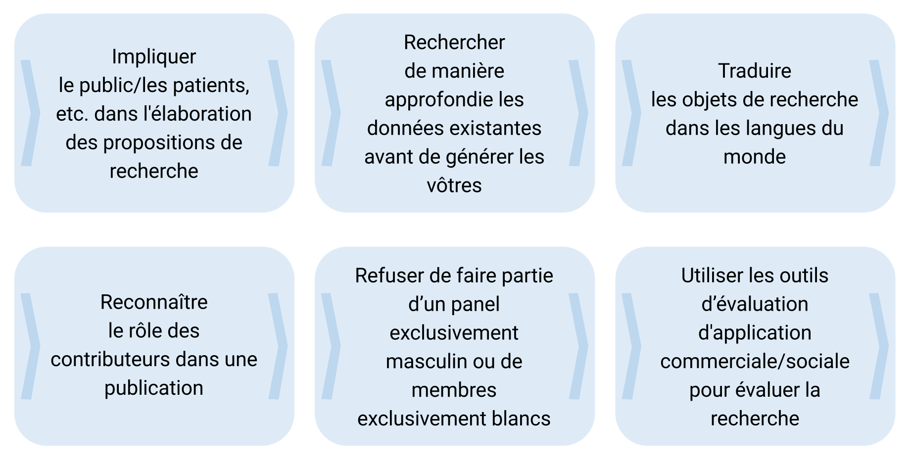
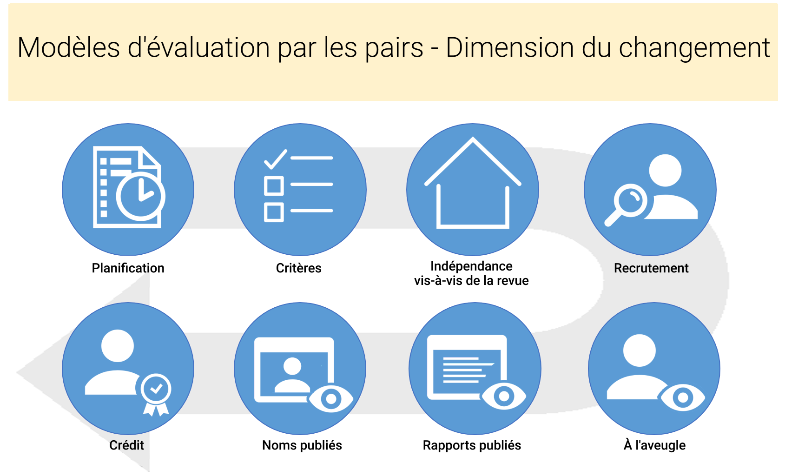
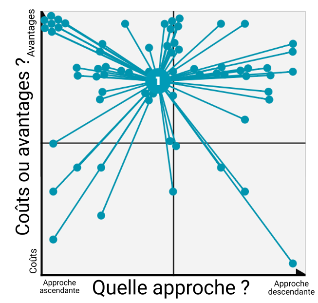
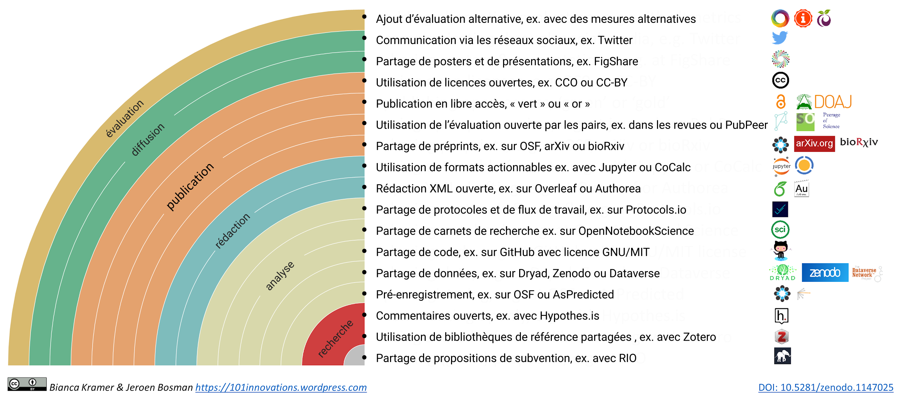
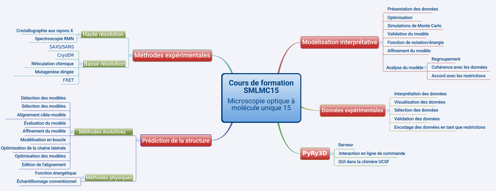

Exemples et conseils pratiques à adopter, adapter et développer
Dans ce chapitre, vous trouverez une mine de documents pour vous aider à engager activement vos stagiaires à l'examen critique des questions de science ouverte.
Nous vous recommandons d'aborder tous ces documents avec la devise "Adopter, adapter, développer" à l'esprit, ce qui signifie qu'il vaut mieux réutiliser ce qui existe quand c'est possible. Par conséquent, avant de commencer à développer des ressources de formation à partir de zéro, renseignez-vous sur les ressources existantes que vous pourriez réutiliser. Nous vous donnons ici quelques exemples de ressources, avec des conseils sur la manière dont elles pourraient être adaptées à vos besoins. Nous fournissons également des liens et des pistes pour vous aider à trouver des ressources supplémentaires. Dans certains cas, les ressources existantes peuvent être utilisées telles quelles, vous pouvez donc simplement les adopter. Un exemple-type serait un tutoriel vidéo sur les formats de fichiers ouverts, vers lequel vous pouvez rediriger votre public. Dans d'autres cas, vous devrez peut-être modifier un peu les ressources existantes afin de les adapter à vos besoins. Par exemple, vous devrez peut-être ajouter ou remplacer des références spécifiques à une institution ou à un pays par une vue d'ensemble des exigences en matière de libre accès émises par les de la recherche. Ce n'est qu'en dernier recours que vous devriez développer vos propres ressources de formation en partant de zéro. Si vous souhaitez développer vos propres supports de formation, assurez-vous de produire des ressources éducatives en libre accès afin que d'autres formateurs puissent réutiliser et adapter vos supports.
Exemples de structures de cours formation
Rencontres Science Ouverte à la Bibliothèque universitaire de l'Université de Göttingen (3 heures)
L'Open Science Network Göttingen, groupe de chercheurs et de bibliothécaires qui soutiennent les pratiques de science ouverte et l'échange des connaissances, organise régulièrement ces rencontres pendant lesquelles sont abordés divers sujets liés à la science ouverte. Le réseau réunit toute personne intéressée par les sujets de science ouverte sur le campus de Göttingen et est ouvert à tous. Il est devenu très populaire et attire des universitaires de différentes disciplines désireux de discuter de leurs expériences en matière de science ouverte et de découvrir de nouvelles méthodes, de nouveaux outils et de nouvelles pratiques. Les conférenciers invités introduisent généralement les thèmes, puis des discussions en petits groupes permettent d'approfondir des questions connexes.
- Plus d'informations sont disponibles sur le site de la Bibliothèque d'État et universitaire de Göttingen - Rubrique Science ouverte : State and University Library Göttingen - Open Science
Groupes d'étude Mozilla (Série de réunions de 2-3 heures)
Les groupes d'étude sont des communautés de pairs (par exemple, de la même institution) qui s'engagent à apprendre les uns des autres et à s'enseigner les uns aux autres. Ce sont des rencontres amusantes et informelles qui permettent aux participants de partager leurs compétences, leurs expériences et idées autour de la science ouverte, du code source libre et des pratiques communautaires de recherche. L'objectif du projet Groupes d'étude de Mozilla est de soutenir ce mode d'étude entre pairs, en fournissant un ensemble simple d'outils, des modèles de plans de cours et l'accès à une communauté internationale de chercheurs partageant le même état d'esprit et d'apprenants passionnés par le code (Texte adapté de science.mozilla.org/programs/studygroups)
Analyse reproductible et recherche transparente (Atelier d'une journée entière)
La transparence, le partage ouvert et la reproductibilité sont des valeurs fondamentales de la science, mais ne font pas toujours partie de la pratique quotidienne. Une première itération de cet atelier a eu lieu dans le contexte de l'événement "Open Science Tools, Data & Technologies for Efficient Ecological & Evolutionary Research", organisé par NIOO-KNAW et DANS-KNAW. La formation vise à donner un aperçu de l'état actuel de l'analyse reproductible afin d'assurer la transparence dans la recherche. L'atelier présente des sujets méthodologiques (tels que l'utilisation d'un cadre scientifique ouvert et de lignes directrices pour l'établissement de rapports) ainsi que des outils logiciels (tels que Git, Docker, RMarkdown / knitr et Jupyter). Au-delà d'une simple énumération sous forme de présentations, la seconde moitié de l'atelier met l'accent sur le renforcement de compétences pratiques, par le biais d'exercices et de tutoriels couvrant la plupart des aspects logiciels. Le matériel et le contenu sont disponibles ici : reproductible-analysis-workshop.readthedocs.io
Science ouverte : Qu'est-ce que j'y gagne ? (1 à 2 jours)
L'objectif de l'atelier est de fournir aux chercheurs et aux administrateurs de la recherche des exemples pratiques d'outils de science ouverte et des exemples de flux de travail dans diverses disciplines, afin de commencer à les appliquer et d'en discuter. Pour cela, nous présentons un aperçu des pratiques et des outils de la science ouverte utilisés tout au long du processus de travail scientifique, avec des exemples pratiques, des recueils d'opinion et des discussions interactives. Le deuxième jour de la formation est axé sur la mise en application et le partage. Au cours des différentes sessions, les participants explorent et, si possible, testent ou mettent en pratique les outils et les modes de travail. Ils le font en petits groupes et individuellement, ainsi que sur un forum. La dernière session est l'occasion de revenir sur les obstacles et les incitations à passer à la science ouverte dans ses recherches personnelles .
La science ouverte - qu'est-ce que j'y gagne ? (Vienne, 2017, compte-rendu d'atelier)
La science ouverte - qu'est-ce que j'y gagne ? (Turin, 2018, programme de l'atelier)
Ateliers de "Charpenterie" (2 jours)
Un atelier "carpentry" ou charpenterie est un événement pratique de deux jours qui aborde les compétences de base nécessaires pour être productif dans une petite équipe de recherche. De courts tutoriels alternent avec des exercices pratiques et toutes les instructions sont données en direct par l'intermédiaire de lignes de code. Software Carpentry (la charpenterie logicielle) a été fondé en 1998 et Data Carpentry (charpenterie de données) en 2013. Toutes deux cherchent à développer les compétences informatiques, organisent des ateliers de deux jours animés par des instructeurs bénévoles et s'efforcent de combler les lacunes dans la formation actuelle des chercheurs. Toutefois, ils diffèrent par leur contenu et le public auquel ils souhaitent s'adresser. Les ateliers de Data Carpentry se concentrent sur les bonnes pratiques en matière de données. Ses apprenants ne sont pas des personnes désireuses d'apprendre à coder, mais plutôt des personnes disposant de beaucoup de données et qui ne savent pas quoi en faire. Les ateliers de Data Carpentry s'adressent à de purs novices, sont spécifiques à un domaine et proposent un programme complet centré sur un seul ensemble de données. Les ateliers de charpenterie logicielle sont destinés aux personnes qui ont besoin de programmer plus efficacement pour résoudre leurs problèmes de calcul, ils ne sont pas spécifiques à un domaine et sont modulaires - chaque leçon de charpenterie logicielle est indépendante.
Charpenterie logicielle (Software Carpentry)
Charpenterie de données (Data Carpentry)
Programme "Formation de formateurs" de l'EIFL (4 jours)
L'EIFL a organisé un programme de formation de formateurs pour cinq universités dans les pays partenaires de l'EIFL (Ethiopie, Ghana, Zimbabwe, Tanzanie et Népal) qui se sont engagés à intégrer le libre accès, la science ouverte et les données de recherche ouvertes dans leurs cours de doctorat. La première journée a été consacrée à l'accès ouvert et aux données ouvertes. Les journées 2 et 3 ont été consacrées à la science ouverte dans l'ensemble du flux de recherche, ainsi qu'aux pratiques actuelles dans les universités des participants. Le quatrième jour, les participants ont conçu et préparé leur propre programme de formation.
- Programme de formation de formateurs de l'EIFL (Addis-Abeba, 2017, Programme et supports)
Universités d'été en Science ouverte (5 jours)
Plusieurs universités européennes organisent des universités d'été d'une semaine consacrées à la science ouverte, principalement à destination des chercheurs en début de carrière. Ces événements couvrent des sujets divers sur cinq jours, avec généralement de nombreuses activités pratiques pour appliquer la science ouverte dans la pratique quotidienne.
Ecole d'été de l'EPFL sur la science ouverte en pratique (2017, aperçu du programme)
Université d'Utrecht - Université d'été Science ouverte et carrière universitaire (2017, programme et matériel)
Cours d'été de l'Université d'Essex en sciences sociales et analyse des données - Introduction à la Science ouverte (2017, aperçu du programme)
Université d'été doctorale du LERU sur la gestion de données (2016, description, objectifs d'apprentissage)
Programme de l'Université d'Eté de la Science Ouverte et Recherche -- Université d'Utrecht 2017
Exemples d'exercices
Plan type
Format, durée nécessaire
Sujet (voir Open Science Basics)
Objectifs d'apprentissage
Description de l'exercice
Matériel et outils nécessaires
Prérequis nécessaire(s)
Éléments à garder à l'esprit
Comment adapter l'exercice à d'autres usages
Utilisez ce formulaire Google pour suggérer des exercices supplémentaires !
Types d'exercices
Échauffement rapide / Petits exercices récréatifs
Exercices en petits groupes
jeu de rôle
Débat sur les thèmes et les thèses de la Science Ouverte
Forum : partage d'expériences et d'expertise
rencontre avec des chercheurs / des décideurs
...
exercices en séance plénière
cartographie collaborative
jeu de mise en situation
inventaire
jeux de cartes
exposés
jeu de rôle
présentation de cas réels et d'exemples (également par les participants)
présentation d'un concept en une minute
conférenciers invités
...
exercices de mise en pratique (seul ou en binôme)
visualisation
explorer et tester des outils et des plateformes
Introduisez une pratique de science ouverte dans votre propre travail de recherche
Vérifiez la reproductibilité d'un article scientifique
...
Exemples d'exercices (avec indication des outils)
| Intitulé | Sujet | Type | Durée | |
| 1 | En ligne ! | Général | Groupe entier | 5-10 minutes |
| 2 | Hiérarchisation des besoins de formation | Concepts et principes de la science ouverte | Groupe entier | 10 minutes |
| 3 | Sélection de pratiques de la science ouverte | Concepts et principes de la science ouverte | Groupe entier | 1h - 1h30 |
| 4 | Thèmes de discussion autour de la science ouverte | Concepts et principes de la science ouverte | Petits groupes | 20-30 minutes |
| 5 | Café LIBER pour la science ouverte | Concepts et principes de la science ouverte | Petit groupes | 1h30 |
| 6 | Qu’est-ce qu’une donnée de recherche pour moi ? | Données et matériaux de la recherche ouverte | Seul ou en binôme | 15 minutes |
| 7 | Pourquoi ne pas partager les données ? | Données et matériaux de la recherche ouverte | Petits groupes | 20 minutes |
| 8 | Partage des données - le bingo des bonnes excuses | Données et matériaux de la recherche ouverte | Groupe entier | 20-30 minutes |
| 9 | Moi et mes données - Datagrammes | Données et matériaux de la recherche ouverte | Groupe entier | 1-4 heures |
| 10 | Trouver son entrepôt de données | Données et matériaux de la recherche ouvertes | Seul ou en binôme | 10-15 minutes |
| 11 | De quoi a-t-on besoin pour publier ses données ? | Données et matériaux de la recherche ouvertes | Groupe entier | 10 minutes |
| 12 | Créer des métadonnées | Données et matériaux de la recherche ouvertes | Seul ou en binôme | 5 minutes |
| 13 | Démarrer avec le partage ouvert de logiciels | Logiciels libres pour la recherche et open source | Seul ou en binôme | 20-30 minutes |
| 14 | Flux de travail pour des données reproductibles et analysables | Recherche reproductible et analyse des données | Seul ou en binôme | 4-8 heures |
| 15 | Choisir la bonne version d’archive ouverte | Recherche reproductible et analyse de données | Seul ou en binôme | 15-20 minutes |
| 16 | Formats de fichiers ouverts | Licences et formats de fichiers ouverts | Groupe entier | 10-15 minutes |
| 17 | Associer les licences Creative Commons | Licences et formats de fichiers ouverts | Groupe entier | 5-10 minutes |
| 18 | Ressources éducatives libres (REL) - Remix | Licences et formats de fichiers ouverts Ressources éducatives libres | Groupe entier | 10-15 minutes |
| 19 | Evaluation ouverte par les pairs - les participants évaluent réciproquement leurs textes de façon ouverte | Evaluation ouverte par les pairs et métriques | Petits groupes | 1h30 |
| 20 | Evaluation ouverte par les pairs - vos 2 centimes | Evaluation ouverte par les pairs et métriques | Groupe entier | 1h30 |
| 21 | Prendre position | Politiques de la science ouverte | Groupe entier | 10 minutes |
| 22 | Explication en langage courant (Chantier en cours) | Science citoyenne et Plateformes collaboratives de communication scientifique | Petits groupes | 2-3 heures |
| 23 | L’avocat du diable - convaincre les sceptiques | Plaidoyer pour la science ouverte | Petits groupes | 30 minutes |
| 24 | Construire un cadre de travail “science ouverte” et le lier à d’autres plateformes (Chantier en cours) | Données et matériaux de la recherche ouverte | Seul ou en binôme | |
| 25 | Le piège à la publication (chantier en cours) | Accès ouvert aux résultats de la recherche publiés | Exercice en petits groupes | 2 heures |
| 26 | (Chantier en cours) | Données et matériaux de la recherche ouverte | Exercice en petits groupes | 4 jours (5 heures par jour) |
| 27 | “Former le formateur” - Jeu de cartes pour la formation à la science ouverte | Plaidoyer pour la science ouverte | Exercice en petits groupes | 2 heures |
Exemple 1 : Entrez en ligne !
Format, durée nécessaire
- Exercice en groupe, 5--10 minutes
Thème sujet
- Briser la glace, peut être lié au thème de la formation ou non
Objectifs d'apprentissage
- Amener les participants à se détendre
Description de l'exercice
- Une ligne imaginaire dans la classe figure un spectre allant de "Tout à fait d'accord" à "Pas du tout d'accord". l'un des participants ou l'animateur, énonce une affirmation (qui peut être liée ou non au thème de la formation : cela peut aller de : "Les données fermées ne devraient pas être citées" à "Les leggings ne sont pas des pantalons"). Tous les participants doivent se positionner sur la ligne imaginaire selon leur opinion. L'animateur demande à certains d'expliquer leur positionnement (au sens propre !).
Matériel et outils nécessaires
- aucun
Prérequis nécessaire
- aucun
Éléments à garder à l'esprit
- Attention à ne pas donner la parole uniquement à ceux qui ont choisi des positions extrêmes. Demandez aux personnes qui sont restées au milieu d'expliquer leur point de vue.
Comment adapter l'exercice à un autre usage
- adapter le type de question à la situation. Pour un nouveau groupe, autoriser les participants à proposer une affirmation hors-sujet ou triviale, mais cette technique peut aussi être utilisée pour prendre la température sur certains sujets polémiques en lien avec le thème [de l'atelier,] en particulier avec des gens qui travaillent déjà ensemble depuis un certain temps (par exemple le deuxième jour d'une formation/de l'atelier).
Exemple 2: Priorisation des besoins de formation
Format, temps nécessaire
- Plénière, ~10 minutes
Sujet
Objectifs de formation
Identifier les lacunes en termes de connaissances / les domaines dans lesquels les participants estiment qu'ils bénéficieraient le plus d'une formation.
- (facultatif) Identifier les domaines dans lesquels les participants se sentent compétents (et peuvent donc partager leurs propres connaissances).
Description de l'exercice
Présentation succincte du cycle de la recherche et des activités correspondantes.
Demandez aux participants d'identifier individuellement deux ou trois activités pour lesquelles ils auraient le plus grand intérêt à recevoir une formation (en lien avec la science ouverte).
Facultativement, demandez également aux participants quels sont les deux ou trois domaines dans lesquels ils se sentent déjà compétents (là encore, en relation avec la science ouverte).
Sur les imprimés individuels, les participants utiliseront des gommettes pour chaque question.
Les participants colleront ensuite des gommettes similaires sur l'imprimé commun.
Discutez des résultats avec l'ensemble du groupe. Assurez-vous que lorsque les personnes verront les points indiqués, elle se rendent compte qu'elles ont aussi une grande opportunité d'apprendre avec l'aide des autres participants.

Outils nécessaires
Version imprimée du Cycle de la recherche et ses activités pour chaque participant + 1 imprimé commun
Gommettes de deux couleurs différentes

Prérequis
- Aucun. Une certaine familiarité avec le cycle de la recherche est utile.
Éléments à garder à l'esprit
Le meilleur moment pour utiliser cet exercice est au début d'un programme de formation long pendant lequel plusieurs sujets seront abordés.
Pour les gommettes, choisissez une combinaison de couleurs adaptée aux daltoniens.
Le nombre d'activités à choisir dépend du nombre de participants (par exemple, trois pour les petits groupes, deux pour les grands groupes).
Les impressions individuelles sont utilisées pour éviter la pression des pairs et les biais.
Les impressions individuelles peuvent être conservées à titre de référence pendant le reste de la formation.
Comment adapter l'exercices pour d'autres usages
- Cet exercices peut aisément être adapté pour prioritiser d'autre sujets.
Exemple 3 : Sélection des pratiques de la science ouverte
Format, temps nécessaire
- Plénière, 1 heure à 1h30
Sujet
- Concepts et principes ouverts
Objectifs pédagogiques
Découvrir le panorama des pratiques de la science ouverte dans l'ensemble du processus de recherche.
Évaluer les pratiques sur lesquelles il serait le plus possible et le plus efficace de se concentrer.
Description de l'exercice
Avant l'exercice, triez les cartes selon la phase ou selon l'activité de recherche et répartissez-les dans la salle (par exemple, sur des tables ou sur une grande partie du sol).
Marquez sur une grande portion de mur (les fenêtres ou des tableaux d'affichage peuvent également être utilisés) les différentes phases du cycle de recherche (par exemple, préparation, découverte, analyse, rédaction, publication, sensibilisation, évaluation).
Demandez aux participants de sélectionner les pratiques qu'ils jugent vraiment importantes pour la science ouverte, et accrochez-les au mur, regroupées par phase de recherche.
Encouragez les participants à ajouter des pratiques de recherche qui ne figurent pas sur les cartes.
Répartissez les participants en sept groupes.
Chaque groupe examine les pratiques sélectionnées pour une phase de recherche et choisit les deux pratiques qu'il juge les plus faciles à mettre en œuvre et les plus efficaces pour rendre la recherche plus ouverte. Déplacez les cartes qu'ils auront choisies plus haut sur le mur ou retirez les autres cartes.
Les petits groupes expliquent leur choix aux autres participants.
Prises ensemble, les pratiques de recherche sélectionnées peuvent former un schéma directeur d'un flux de travail scientifique ouvert.
Comme exercice de suivi, les participants peuvent discuter des étapes possibles pour mettre en œuvre ces pratiques :
quels outils/plateformes peuvent être utilisés
quels seraient les incitations et les obstacles potentiels
quel soutien serait nécessaire
quels changements de politique seraient nécessaires



Matériel et outils nécessaires
Un grand mur, des fenêtres, ou plusieurs panneaux d'affichage pour y accrocher des supports
Suffisamment d'espace pour se déplacer
Des cartes imprimées avec des pratiques scientifiques ouvertes SMASH (également disponibles sous forme de diapositives PowerPoint modifiables SMASH ou dans un tableur Google)
Des cartes vierges, des stylos / des marqueurs
Des punaises ou du ruban adhésif
Prérequis nécessaires
- Aucun, une certaine familiarité avec le processus de recherche est utile.
Éléments à garder à l'esprit
En fonction du nombre de participants, des petits groupes peuvent établir des priorités de pratiques pour plus d'une phase de recherche.
Testez d'abord l'utilisation du ruban adhésif sur les fenêtres/murs, certains types sont vraiment difficiles à enlever :-)
L'ensemble du groupe peut ne pas être d'accord avec la sélection de pratiques du petit groupe pour une phase de recherche donnée. Décidez au préalable s'il faut s'en tenir aux choix faits, ou s'il y a place pour une discussion et un changement de pratiques sur la base d'un consensus.
Comment adapter l'exercice pour d'autres usages ?
L'exercice pourrait être modifié pour se concentrer sur des activités spécifiques / une phase spécifique du cycle de recherche (par exemple, la publication ou l'évaluation).
Il est possible d'utiliser d'autres critères de sélection, par exemple les pratiques que les participants utilisent eux-mêmes, ou les pratiques qui seraient les plus optimales (indépendamment de la faisabilité/des efforts nécessaires).
Exemple 4 - Sujets de discussion autour de la science ouverte
Format et temps nécessaire
- En petits groupes, 20 à 30 minutes
Sujet
- Concepts et principes de l'ouverture
Objectifs d'apprentissage
- Confronter ses propres expériences et opinions sur la science ouverte avec le point de vue des autres participants.

Description de l'exercice
Répartissez les participants en groupes de quatre ou cinq et distribuez les sujets de discussion (par exemple, imprimés sur papier).
Demandez aux participants à l'intérieur de chaque groupe d'échanger leurs points de vue
(Facultatif) Demandez à chaque groupe de résumer les points les plus importants qui ont été soulevés pour l'ensemble du groupe.
Quelques suggestions de thèmes :
"Travailler dans un esprit de science ouverte rend la recherche plus amusante"
"La concurrence est un problème sérieux qui rend l'adoption de la science ouverte difficile"
"Les APC (frais de publication) sont le principal obstacle à la publication d'un plus grand nombre d'ouvrages en libre accès"
"Nous avons besoin d'un soutien plus explicite des bailleurs de fonds et du gouvernement en faveur de la science ouverte"
"S'engager dans une évaluation ouverte par les pairs est problématique pour les jeunes chercheurs qui veulent faire carrière"
"Nous devrions prendre les scientifiques citoyens plus au sérieux et ne pas les considérer uniquement comme des fournisseurs de données".
"Les facteurs d'impact sont un symptôme et non la cause de la course aux publications"
"Il n'y a absolument aucune raison de ne pas prépublier un article dès qu'il est prêt".
"Le simple partage de nos données est une bonne chose, mais pour accélérer la science, nous devons également travailler sur l'interopérabilité et la réutilisation de ces données"
"Partager des idées et des projets par le biais de ResearchGate est un bon moyen de faire connaître notre recherche"
"Les exigences de nos porteurs de projets scientifiques sont probablement la principale raison pour laquelle les jeunes chercheurs ne s'engagent pas davantage dans la science ouverte."
"Nous devrions nous efforcer de créer une sorte de "patrimoine commun" dans lequel nous partagerions tous nos résultats et objets de recherche afin de favoriser la collaboration et la réutilisation".
Matériel et outils nécessaires*
- Des feuilles sur lesquelles ont été imprimés les sujets de discussion
Prérequis nécessaires
- Une certaine familiarité avec le système de recherche.
Éléments à garder à l'esprit
- Cet exercice est avant tout destiné aux chercheurs (plutôt qu'aux personnels dans les fonctions support), car ils peuvent se référer directement à leur propre situation et parler de leur propre expérience.
Comment adapter l'exercice à d'autres usages
- En modifiant les thèmes de discussion, cet exercice peut être adapté à d'autres sujets.
Exemple 5 : Café LIBER Open Science
Format, temps nécessaire
- En petits groupes, 1 heure et demie
Sujet
Objectifs d'apprentissage
Acquérir des connaissances sur les différents aspects de la science ouverte.
Mettre en relation les différentes parties prenantes pour discuter des déclarations et des sujets.
Matériel et outils nécessaires
Le jeu de cartes LIBER Science Café, ou une pile d'affirmations écrites préparées sur le modèle de World Café
Une table pour 6 à 8 personnes
Description de l'exercice
Mise en place : 6 à 8 personnes se réunissent autour d'une table. Elles désignent un arbitre, dont le rôle sera de diriger et de modérer les débats, ainsi qu'un(e) secrétaire, qui prendra des notes. Pour lancer la discussion, on leur fournit un jeu de cartes portant des affirmations et des questions liées à la science ouverte et aux projets en jeu. Ces énoncés servent à amorcer la conversation. Quelqu'un choisit une carte, le groupe en parle pendant un certain temps, puis on peut passer à la carte suivante. Ainsi, les participants apprennent les uns des autres et commencent à réfléchir à la situation dans son ensemble. Pendant ce temps, vous pouvez recueillir des informations précieuses auprès des différentes parties prenantes.
Le rôle du (de la) secrétaire est de recueillir les points intéressants de la conversation de deux manières différentes :
Les cartes mentales : Vous pouvez utiliser ces cartes pour les sujets qui suscitent beaucoup d'attention lors de la conversation. Si les choses vont trop vite, n'ayez pas peur d'interrompre la conversation et de demander aux personnes d'apporter leur contribution à cette carte mentale. Écrivez le sujet principal au centre et travaillez à partir de là. Est-il difficile de trouver des liens ? Vous pouvez également recueillir des pensées et des déclarations disparates ici.
La carte de citations et idées brillantes : Parfois, quelqu'un dit quelque chose qui est tout simplement WAOUH !, trouve le mot juste, ou met le doigt sur un point-clé. Pour cela, vous disposez de la carte "citations et idées brillantes". Vous n'en avez qu'une, il vous faudra donc être très sélectif. Si vous pensez qu'une idée ou une remarque mérite de figurer sur cette carte, n'hésitez pas et faites-le savoir.
Après 20 à 30 minutes, demandez aux groupes de changer de table. Les arbitres et secrétaires restent assis à la même place.
À la fin, chaque modérateur fait un rapport sur ce que les différents groupes ont dit à sa table.
Exemple 6: Quelles données de recherche pour moi ?
Format, temps nécessaire
- Individuel/Binôme, 15 minutes
Sujet
Objectifs pédagogiques
- Comprendre ses propres données et les données de son domaine de recherche
Description de l'exercice
- Laissez les participants réfléchir aux derniers articles qu'ils ont écrits / lus. Y avait-il du matériel supplémentaire (p. Ex. tableaux, images) ? Laissez-les noter des exemples et des types de données dans leur domaine de recherche. De quelles informations ou données auraient-ils besoin pour réanalyser un article ? Que faudrait-il pour que leur propre thèse / article soit bien compris ? Laissez-les présenter leurs résultats soit par binôme / groupes, puis en plénière
Matériel et outils nécessaires
- Du papier et un crayon
Prérequis nécessaires
- Aucune connaissance préalable requise
A garder à l'esprit
- Donnez aux participants suffisamment de temps pour réfléchir
Comment s'adapter à d'autres finalités ?
- Vous pouvez raccourcir l'activité en évitant le travail en binôme / en groupe et en discutant simplement en plénière.
Exemple 7 : Pourquoi ne pas partager ses données ?
Format, temps nécessaire
- Petits groupes, ~ 20 minutes
Sujet
Objectifs pédagogiques
- Encourager les participants à réfléchir aux obstacles éthiques et pratiques du partage de données et à examiner de manière critique leurs croyances en la matière.
Description de l'exercice
- En binômes ou en petits groupes, les participants disposent de cinq minutes pour dresser une liste, la plus longue possible, de toutes les raisons pour lesquelles les chercheurs pourraient ne pas souhaiter partager leurs données. Les participants font ensuite un bilan des arguments listés, discutent de leur validité ou non, et des stratégies pour surmonter les préoccupations légitimes. L'équipe qui a listé le plus de préoccupations légitimes gagne (récompense facultative).
Matériel et outils nécessaires
- Matériel de prise de notes (stylo, papier ou document en ligne) ; Facultatif : une récompense.
Niveau de connaissance requis
- Connaissance pratique de l'utilisation de données
Éléments à garder à l'esprit
- L'exercice doit être ludique et les participants doivent être encouragés à proposer des exemples ludiques et des exemples sérieux.
Comment s'adapter à d'autres finalités ?
- Le même format pourrait facilement être adapté à de nombreux autres éléments de la science ouverte, par exemple, le libre accès (pourquoi ne pas publier en Libre Accès, etc.)
Exemple 8 : Bingo des "Excuses sur l'ouverture des données"
Format, temps nécessaire
- Exercice en groupe, 20-30 minutes
Sujet
Objectifs pédagogiques
- Connaître les idées reçues qui empêchent le partage des données de recherche et de comprendre les avantages de l'ouverture des données
Description de l'exercice
- Cet exercice devrait être utilisé en début de formation. Les participants sont séparés en deux groupes ou plus (selon leur nombre). Un formateur veille à ce qu'un groupe développe des arguments « pour » et les autres des arguments « contre ». En petits groupes, les participants discutent des excuses déjà définies au "Open Data Excuse" Bingo, ce sont des arguments couramment utilisés par les chercheurs pour expliquer pourquoi ils ne peuvent pas partager leurs données. Pendant les 10 dernières minutes, les groupes doivent confronter leurs arguments. Un formateur aide les participants à développer des arguments pour ouvrir leurs données et à mieux comprendre l'idée de partager leurs données.
Matériel et outils nécessaires
- Impression des documents "Open Data Excuse" Bingo
Prérequis nécessaires
- Les participants doivent avoir une expérience de terrain de la création / collecte de données de recherche.
Éléments à garder à l'esprit
- Faites le tour des groupes et essayez de les aider à construire des arguments si besoin. Aidez en particulier le groupe « pour » qui est censé développer des arguments solides en faveur du partage des données. Une aide supplémentaire peut s'avérer nécessaire pour que ces participants soient les plus forts possible lors de la confrontation avec les participants du groupe « contre ».
Comment adapter l'exercice à d'autres usages
- Cet exercice peut être adapté à d'autres sujets (mais le matériel devra également être adapté)
Exemple 9 : Moi et mes données - Datagrammes
Format, temps nécessaire
- Exercice en groupe, 1 à 4 heures (si effectué dans le cadre d'un atelier)
Sujet
Objectifs d'apprentissage
- Comprendre ce que sont les données et quel type d'entrepôt est nécessaire pour les stocker correctement
Description de l'exercice
Les participants sont invités à réfléchir aux derniers travaux de recherche qu'ils ont effectués dans le cadre d'une thèse ou d'un mémoire (licence, master ou doctorat) et à se pencher sur le type de données qu'ils ont produites.
Ils vont ensuite créer un datagramme, c'est-à-dire noter sur une carte
La discipline correspondant au sujet
Le titre de la thèse
Une série de lettres indiquant :
Le format (tel que pdf, doc, csv ou autre)
La taille (kb, mb, gb, tb, etc.)
Le support (comme « a » pour analogique, « d » pour numérique, c'est-à-dire numérisé, et « b » pour nativement numérique, ou encore une combinaison des trois supports)
Et enfin le type de données, en distinguant grossièrement O pour les données d'observation, E pour les expériences, S pour les simulations, D pour les dérivations, R pour les références et D pour les données numérisées, ou des combinaisons de celles-ci.
Après ces étapes, toutes les cartes sont finalement regroupées sur un mur en fonction des catégories/lettres (format, taille, support et type).
Les participants discutent des différents regroupements et réfléchissent aux conditions d'un dépôt dans un entrepôt de données ou dans une archive ouverte.
Matériel et outils nécessaires
Des cartes et des tableaux à feuilles suspendues, ou mieux, un mur et des accessoires pour fixer les cartes au mur.
Prérequis nécessaires
Aucun, à condition que l'exercice commence par quelques explications sur la manière de décrire et de distinguer les données entre elles. Des connaissances de base sur les données de la recherche, les entrepôts et les archives peuvent être utiles.
Éléments à garder à l'esprit
- Adoptez une approche progressive
Comment adapter l'exercice à d'autres usages
- Pas encore expérimenté.
Exemple 10 : Trouvez où publier vos données
Format, temps nécessaire :
- Individuel / en binôme, 10-15 minutes
Sujet :
- Données de recherche ouvertes
Objectifs d'apprentissage :
- Prendre connaissance de l'existence des entrepôts de données spécialisés par discipline, de leurs caractéristiques et de leurs normes
Description de l'exercice :
- Les participants doivent trouver un dépôt de données pour leurs données de recherche. Ils se rendent sur re3data.org et effectuent une recherche par discipline et/ou par type de contenu. Demandez-leur de limiter leur recherche à des entrepôts de données avec attribution de DOI. Donnez-leur le temps de consulter la description de l'entrepôt et demandez-leur de prendre note des entrepôts pertinents. Organisez ensuite une discussion sur leurs résultats et leurs expériences.
Matériel et outils nécessaires :
- Ordinateur avec un accès à l'internet pour chaque participant (peut également être utilisé en binôme si nécessaire)
Prérequis nécessaires nécessaire :
Les participants doivent savoir quel type de données de recherche ils produisent
Non applicable aux étudiants en licence
Éléments à garder à l'esprit :
- Certaines personnes peuvent ne pas trouver d'entrepôt approprié, aussi préparez une liste d'entrepôts génériques et institutionnels qui peuvent être utilisés et affichez-la ou distribuez-la ensuite.
Adaptation possible pour d'autres objectifs :
- Vous pouvez adapter cet exercice à l'open access en utilisant le site web du Directory of Open Access Journals [DOAJhttps://doaj.org).
Exemple 11 : De quoi avez-vous besoin pour publier des données?
Format, temps nécessaire :
- Exercice en groupe, 5-10 minutes (en fonction de la taille du groupe)
Sujet :
- Données de recherche ouvertes
Objectifs d'apprentissage :
- Avoir en mémoire les étapes nécessaires à la publication de données
Description de l'exercice :
- Il est recommandé d'utiliser cet exercice à la fin de la formation. Demandez aux participants de jouer à un "Je fais ma valise" dans lequel ils doivent nommer les éléments nécessaires pour publier des données (par exemple, données de recherche (fichiers), métadonnées, mots clés, documentation, licence, ORCID, entrepôt, titre approprié, références/sources, citation de données, temps et courage !)
Matériel et outils nécessaires :
- Aucun
Prérequis nécessaires :
- Les participants connaissent les éléments de base de la publication de données grâce au cours.
Éléments à garder à l'esprit :
Si les participants oublient un élément, essayez de les aider ou de leur donner des indications.
Nommez "courage" en dernier dans la liste des éléments.
Adaptation possible pour d'autres objectifs :
- Vous pouvez adapter cet exercice pour le processus de publication en libre accès.
Exemple 12 : Comment créer des métadonnées
Format, temps nécessaire :
- Individuel / en binôme, 5 minutes
Sujet :
- Données de recherche ouvertes
Objectifs d'apprentissage :
- Etre capable de créer des métadonnées pour des données de recherche
Description de l'exercice :
- Demandez aux participants de sélectionner un fichier sur lequel ils travaillent actuellement. Demandez-leur de répondre aux questions suivantes sur un morceau de papier : Qui a créé le contenu ? Quel est le contenu ? Quand le contenu a-t-il été créé ? Comment le contenu a-t-il été créé ? Pourquoi le contenu a-t-il été créé ? Ensuite, discutez avec eux de leurs résultats. Etait-ce facile ou difficile ? Peuvent-ils répéter cette tâche pour tous les fichiers dans leur processus de recherche ?
Matériel et outils nécessaires :
- Un morceau de papier (ou un formulaire préparé) et un stylo
Prérequis nécessaires :
- Aucune connaissance préalable
Éléments à garder à l'esprit :
Pour accélérer l'exercice, préparez un formulaire et imprimez-le ou mettez-le à disposition en ligne.
Pour les projets plus importants comportant beaucoup de fichiers, proposez un modèle de dictionnaire de données
Comment adapter l'exercice à d'autres usages :
- Vous pouvez adapter cet exercice comme exercice de documentation.
Exemple 13 : Commencer avec le partage ouvert de logiciel
Format, temps nécessaire :
- Individuel / en binôme, 20-30 minutes
Sujet :
- Logiciel de recherche ouvert et open source
Objectifs d'apprentissage :
Apprendre à utiliser des outils et des services courants pour partager de façon ouverte le code informatique de recherche.
Être en mesure de choisir la licence appropriée pour son logiciel, et comprendre la différence entre les licences permissives et non permissives.
Description de l'exercice :
Cet exercice s'adresse à tout chercheur qui utilisera un logiciel/du code pour ses recherches, qu'il effectue des travaux purement informatiques ou expérimentaux (ces derniers utilisent un logiciel d'analyse, etc.).
Tout d'abord, demandez à chacun de créer un compte GitHub gratuit s'il n'en possède pas déjà un. Ce compte gratuit sera suffisant pour travailler avec un code exclusivement ouvert/public. Vous pouvez toutefois préciser que les étudiants, les enseignants et les chercheurs peuvent [être dispensés de payer et bénéficier d'un compte professionnel gratuit].
Demandez aux participants de créer également un compte Zenodo,et de le lier à leur compte GitHub.
* Ensuite, demandez à chacun de créer un nouveau dépôt public, en choisissant une licence appropriée en fonction des autorisations souhaitées (choosealicense.org peut être utile ici). Sur Zenodo, activer [l'intégration GitHub-Zenodo](https://guides.github.com/activities/citable-code/) pour ce dépôt.
* Demandez aux participants d'ajouter leur(s) fichier(s) source au dépôt, et d'ajouter une description du programme/script au fichier README. Une fois ces fichiers ajoutés, choisir un numéro de version et [créer une version](https://help.github.com/articles/creating-releases/) du logiciel.
* Aller sur Zenodo, et obtenir le DOI qui a été généré pour le logiciel.
* Félicitations, le logiciel est maintenant citable ! On peut ajouter une section au fichier README avec le DOI et la citation suggérée, ou même ajouter le badge DOI fourni par Zenodo.
Matériel et outils nécessaires :
Chaque personne doit disposer d'un ordinateur avec une connexion Internet.
Les participants doivent disposer d'un code, d'un script ou d'un programme prêt - même s'il est "désordonné" - qu'ils partageront publiquement.
Prérequis nécessaires :
- Aucune connaissance préalable
Éléments à garder à l'esprit :
- Aucun
Adaptation possible pour d'autres objectifs :
- Non applicable
[Exemple 14 :Établir un processus reproductible d'analyse de données
Format, temps nécessaire
- Individuellement ou en groupe, 4 à 8 heures (exemples ici)
Sujet
Objectifs de formation
Utiliser une (petite) tâche de calcul pertinente pour votre discipline ou votre contexte, et l'organiser comme un flux de travail ouvert et reproductible.
Comprendre les concepts clés, outils et services utiles dans le contexte de la reproductibilité
Description de l'exercice
Chaque participant sélectionne un jeu de données et un processus d'analyse de données correspondant qui soient pertinents dans son domaine d'activité. Le jeu de données et le processus d'analyse doivent être suffisamment courts pour être traités en quelques minutes. De plus, pour les besoins de cet exercice, le langage de programmation recommandé est Python ou R, mais d'autres langages peuvent être utilisés avec de légères modifications dans les outils sous-jacents.
Le participant exécute initialement le processus sous la forme traditionnelle, puis demande à l'un des autres participants de le reproduire sans aide extérieure. Identifiez à la fois le temps nécessaire à une autre personne pour refaire l'exercice, ainsi que les obstacles rencontrés.
Appliquez le même processus en utilisant l'approche Jupyter / Git / MyBinder ; écrivez le processus en tant que notebook Jupyter, téléchargez le jeu de données et le notebook dans un répertoire sur GitHub, puis connectez le répertoire à mybinder. Après cela, demandez à nouveau à la même personne de reproduire cette opération. Identifiez la différence en temps et en accessibilité.
Matériel et outils nécessaires
- Jupyter et Git sont nécessaires (y compris un compte sur GitHub). En fonction de la langue, des noyaux Jupyter supplémentaires peuvent être nécessaires. Enfin, le formateur peut décider de fournir un exemple commun à tous les participants ou demander aux participants d'apporter le leur. La différence réside dans le temps nécessaire à la préparation, ainsi que dans l'homogénéité du niveau des participants.
Niveau de connaissances préalables requis
- L'atelier peut être réalisé à différents niveaux de connaissances préalables attendues, en adaptant le temps de réalisation. Par exemple, on peut inclure une brève introduction de base à Git, mais dans tous les cas, les participants doivent être conscients des exigences de calcul informatique de leur propre analyse.
Éléments à garder à l'esprit
Le concept général est simple, mais il comporte une courbe d'apprentissage initiale des différentes composantes. Vous pouvez donc envisager de passer un peu plus de temps au début pour discuter de chaque outil, avant de les relier tous ensemble.
Avant l'atelier, envisagez de donner aux participants une explication détaillée du processus d'installation (par exemple, pour Jupyter et Git), afin de minimiser les problèmes techniques potentiels.
Comment adapter l'exercice à d'autres usages
L'atelier peut être élargi pour introduire des concepts supplémentaires de science ouverte, tels que les identifiants pérennes pour les logiciels (exemple : l'attribution d'un DOI de Zenodo dans l'archive ouverte Git), ainsi que pour intégrer tous les aspects sous une plateforme commune (comme l'OSF).
Exemple 15 : Choisir la bonne version d'archive ouverte
Format, temps nécessaire
- individuel ou en binôme, 15 à 20 minutes
Sujet
- Accès Ouvert à la Recherche Publiée / Publications
Objectifs de formation
- Etre capable de déterminer quelle est la version autorisée à être déposée dans une archive ouverte et définir son statut au regard du droit d'auteur
Description de l'exercice
Cet exercice pourrait être destiné aux gestionnaires d'archives ouvertes. Choisissez cinq publications différentes et demandez aux participants de sélectionner la version susceptible d'être autorisée dans une archive ouverte et la mention de droit d'auteur qu'elles devraient comporter ; qui est le détenteur du droit d'auteur et quel régime de droit d'auteur s'appliquerait : tous droits réservés, une licence, domaine public. Discutez avec les apprenants de leurs résultats et montrez-leur les éléments clés qui définissent chaque solution.
Matériel et outils nécessaires
L'exercice peut être effectué avec une feuille de papier (ou un formulaire préparé) et un stylo.
Les personnes ou les binômes doivent disposer d'une connexion internet pour accéder aux documents et vérifier les politiques. Vous pouvez également fournir des copies physiques des articles.
Prérequis nécessaires
Notions de bases du droit d'auteur
Connaissance sur les différentes versions des articles de recherche
Éléments à garder à l'esprit
L'exercice peut être converti en une version en ligne si vous préparez une série de sondages.
Utilisez un éventail de publications, y compris par exemple des articles publiés sous des modèles hybrides, afin de montrer aux participants qu'il ne suffit pas de consulter des sites avec des politiques d'auto-archivage par défaut.
Le nombre de cas déterminera la durée de l'exercice.
Comment adapter l'exercice à d'autres usages
- Peut être adapté à des sessions de formation avec des chercheurs en utilisant leurs propres articles.
Exemple 16 : Licences ouvertes et formats de fichiers
Format, temps nécessaire :
- Exercice de groupe, 10--15 minutes
Sujet :
Objectifs d'apprentissage :
Prendre conscience des formats de fichiers utilisés quotidiennement et de leur degré d'ouverture
Description de l'exercice :
Laissez les participants noter sur des post-it tous les formats de fichiers qu'ils utilisent dans leur travail quotidien. Récupérez ensuite les post-it et collez-les sur le tableau blanc ou le tableau papier. Essayez de les regrouper le mieux possible par catégories ou groupes (texte, tabulaire, statistique, vidéo, image, etc.). Discutez ensuite des résultats avec le groupe. Discutez du niveau d'ouverture de ces formats de fichiers et des alternatives possibles.
Matériel et outils nécessaires :
- Quelques blocs de post-it, un stylo et un tableau blanc ou papier
Prérequis nécessaires :
- Aucune connaissance préalable requise
Éléments à garder à l'esprit :
- Préparez-vous à des formats de fichiers «exotiques» spécifiques à un sujet ou à une machine. Laissez les participants les décrire
Comment adapter l'exercice à d'autres usages :
- Vous pouvez également utiliser des outils Web comme PINGO[ pour la collecte des formats de fichiers. Si vous ne souhaitez pas utiliser de post-it, vous pouvez demander aux participants de noter leurs formats de fichiers sur des feuilles de papier que vous ramasserez].
Exemple 17 : Association de licences Creative Commons
Format, temps nécessaire
- Exercice de groupe, 5--10 minutes
Sujet :
Objectifs d'apprentissage
- Pouvoir différencier les différentes licences Creative Commons et pouvoir les associer pour les besoins de son travail.
Description de l'exercice :
- Les participants doivent créer une combinaison de deux licences. Le groupe doit deviner quelle licence Creative Commons est créée par la combinaison des deux. Répétez l'exercice avec d'autres combinaisons. Intégrez une combinaison qui n'est pas possible (par exemple, CC BY-SA et CC BY-NC) et signalez les pièges. Discutez des résultats avec les participants.
Matériel et outils nécessaires :
- Ordinateur avec projecteur, tableau blanc, paperboard ou feuille de papier pour tous les participants
Prérequis nécessaires :
- Les participants doivent connaître toutes les licences Creative Commons et/ou pouvoir consulter un document s'y rapportant.
Éléments à garder à l'esprit
- Attendez plus de trois secondes avant d'accepter la réponse. Cela permet aux participants de prendre le temps de la réflexion et d'inclure les participants faibles.
Comment adapter l'exercice à d'autres usages :
Créez d'abord des binômes et laissez-les résoudre les combinaisons, puis discutez des solutions en groupe
Utilisez d'autres licences
Exemple 18 : Remix Ressources Éducatives Libres
Format, temps nécessaire :
- Exercice de groupe, 10--15 minutes
Sujet :
Objectifs d'apprentissage :
Être capable de distinguer les différents éléments des licences Creative Commons
Être capable de créer du contenu remixant des [œuvres] antérieures sous plusieurs licences, y compris des œuvres domaine public et tous droits réservés, et de déterminer quelle sera la licence résultante.
Description de l'exercice:
Il en existe une version en ligne et une version imprimée
L'exercice est basé sur un jeu de cartes indiquant un type de contenu : texte, image, musique et vidéo ; chaque carte porte un signe de copyright allant de « tous droits réservés » à « domaine public », ainsi que l'ensemble des licences Creative Commons et la documentation gratuite GNU Licence.
Une personne du groupe choisit 12 cartes et le reste du groupe doit les combiner en créant un support comportant les quatre types de contenu : texte, image, musique et vidéo. Une fois que les participants ont choisi la bonne combinaison, ils doivent décider quelle est la licence possible pour cette nouvelle œuvre.
Matériel et outils nécessaires :
Pour le jeu en ligne : ordinateur et vidéoprojecteur
Pour le jeu imprimé : le jeu de cartes est disponible sur opencontent.org ou vous pouvez créer vous-même un jeu de cartes
Niveau de connaissance préalable requis :
- Les participants doivent connaître les éléments de toutes les licences Creative Commons et avoir des notions de base des questions de droit d'auteur, y compris la notion de copyleft.
Éléments à retenir
- Si vous utilisez la version en ligne, vous pourrez faire l'exercice avec tous les membres de votre groupe, en permettant de multiples réponses possibles.
Comment adapter l'exercice à d'autres usages :
Vous pouvez adapter cet exercice à des éléments de recherche, par exemple aux licences logicielles
Vous pouvez utiliser d'autres licences, inclure un nouveau type de contenu ou définir quel contenu doit comporter le travail final.
Exemple 19 : Révision ouverte par les pairs - les participants révisent ouvertement les textes les uns des autres
Format, durée nécessaire
- Petits groupes, 90 minutes
Sujet
Objectifs de formation
- S'entraîner à la rédaction d'un rapport d'évaluation constructif Réflexion critique sur les avantages et désavantages de l'évaluation ouverte des articles
Description de l'exercice
- Les participants travaillent par groupes de trois. Chaque participant écrit un court texte (~300 mots) donnant son avis sur l'examen ouvert par les pairs tel qu'évoqué dans l'atelier correspondant. Il transmet ensuite son texte à la personne à sa gauche qui rédige une brève évaluation de ce travail. Le texte et l'évaluation sont ensuite transmis à la personne suivante à gauche, de sorte que chacun dispose maintenant d'un texte et d'une évaluation qu'il n'a pas rédigés. La troisième personne donne son avis sur l'évaluation : était-elle constructive, critique, qu'est ce qui aurait pu être amélioré, etc. ? Le groupe lit ensuite tous les textes et réfléchit en quoi le fait que les identités soient connues, les rapports ouverts, etc. a eu un impact sur la manière dont leur évaluation a été rédigée et sur le retour des autres personnes du groupe.
Matériel et outils nécessaires
- Papier et stylo
Prérequis nécessaires
- Aucun, mais les textes feront appel à des connaissances acquises lors de l'atelier sur la révision ouverte par les pairs.
Éléments à garder à l'esprit
- Cet exercice demande aux participants de formuler des critiques sur le travail d'autres participants. Ayez à l'esprit que certaines personnes peuvent avoir du mal à le faire, et certaines avoir du mal à accepter la critique. Si cela se produit, encouragez les participants à évoquer le sujet lors de la discussion de groupe finale.
Comment adapter l'exercice à d'autres usages
Cet exercice peut être utilisé dans un atelier de formation ayant un objectif plus large que l'évaluation ouverte par les pairs. On peut envisager de l'utiliser pour consolider l'apprentissage d'autres thèmes de la science ouverte, en demandant aux participants de rédiger en premier un texte sur ces mêmes thèmes.
Au lieu d'utiliser un stylo et du papier, cet exercice peut également être réalisé à l'aide d'un outil d'écriture collaboratif, tel que Google Docs, Authorea ou Overleaf/ShareLaTeX.
Exemple 20 : Révision ouverte par les pairs - Vos 2 centimes
Format, temps nécessaire
- Session plénière, ~une heure et demie avec la discussion
Sujet
- Révision ouverte par les pairs, Métriques et Évaluation
Objectifs de formation
Prendre conscience qu'il existe de nombreux aspects de l'évaluation ouverte par les pairs et en avoir connaissance.
Se faire une opinion sur les aspects de l'évaluation ouverte par les pairs qui seraient les plus bénéfiques à la science
Avoir un aperçu des bénéfices et possibles inconvénients des différents aspects de l'évaluation ouverte par les pairs, du point de vue du lecteur, de l'auteur et du reviewer.
Description de l'exercice
Introduction des différents aspects de l'évaluation ouverte par les pairs, avec quelques exemples de revues scientifiques / plateformes dans lesquelles ils sont mis en œuvre.
Demandez aux participants d'identifier individuellement deux ou trois aspects de l'évaluation ouverte par les pairs qui selon eux, contribueraient le plus à la science ouverte.
* Sur une grande feuille, les participants placent une pièce de deux centimes sur chacun des aspects qu'ils ont sélectionnés à l'étape précédente
* Les résultats sont analysés collectivement et les aspects les plus souvent sélectionnés sont identifiés
* En petits groupes, les participants prennent ensuite le rôle de lecteur, auteur ou reviewer (tous les profils doivent être présents dans chaque groupe). Ils discutent ensuite un des aspects de l'évaluation ouverte par les pairs du point de vue des rôles qu'ils endossent. Quels sont les bénéfices et les potentiels inconvénients ?
* Enfin, les petits groupes restituent au groupe complet, et de nouvelles perspectives, de nouveaux points de vue peuvent être discutés.

Matériels et outils nécessaires
De grandes impressions du schéma des dimensions de la révision par les pairs: une pour chaque participant et une commune à tous (une présentation avec animations est aussi disponible).
Des pièces de deux centimes (si disponibles dans votre système monétaire, sinon n'importe quelle pièce de faible valeur conviendra).

Prérequis nécessaires
- Aucun, une certaine familiarité avec le processus traditionnel de révision par les pairs sera utile.
Éléments à garder à l'esprit
Pour des personnes qui ne sont pas au fait des développements de l'évaluation ouverte par les pairs, certains aspects peuvent nécessiter des explications supplémentaires. Prévoyez suffisamment de temps pour cela.
Dans les discussions, il peut être difficile pour les personnes de séparer leur opinion personnelle du rôle qu'elles jouent. Encouragez-les à revenir à leur rôle, si nécessaire.
Le nombre de pièces par personne dépend du nombre de participants (par ex. trois pour des petits groupes, deux pour des groupes plus grands)
Comment adapter l'exercice pour d'autres usages
- Le concept du vote avec des pièces ("Vos deux centimes") peut être appliqué à d'autres sujets, de même que l'attribution de rôles dans des discussions en petits groupes.
Exemple 21 : Prendre position
Format, temps nécessaire
- Séance plénière, 15 minutes
Sujet
- Politiques de science ouverte
Objectifs de formation
Amener les participants à prendre position concernant les politiques ou les principes de la science ouverte
Montrer la similarité ou la diversité des opinions des participants
Description de l'exercice
Demandez aux participants d'exprimer leur opinion sur deux questions concernant les politiques ou les principes de la science ouverte.
Les réponses doivent se situer sur une échelle linéaire entre deux extrêmes (par exemple : absolument pas d'accord - tout à fait d'accord).
Les participants votent en utilisant un outil en ligne, ou en plaçant des pastilles collantes sur une feuille de papier dont les axes représentent les deux plages de réponses
Les résultats sont présentés au groupe et la similitude ou la diversité des réponses est discutée, par exemple en demandant à un répondant de chaque quadrant d'expliquer son opinion.
Exemple de question et de résultats :
Pour les chercheurs individuels, la science ouverte entraîne-t-elle plus de coûts ou d'avantages ?
La science ouverte doit-elle être organisée selon une approche de bas en haut ou de haut en bas ?

Matériel et outils nécessaires
Accès à un outil en ligne comme Mentimeter : un compte payant permet d'exporter les résultats mais n'est pas nécessaire pour cet exercice
Pour chaque participant : accès à un smartphone, une tablette ou un ordinateur avec accès à Internet
Alternative hors ligne : feuille de papier de grande taille avec des axes imprimés ou dessinés, pastilles collantes
Prérequis nécessaires
- Aucun : toutefois, certaines connaissances de base sur le sujet sont utiles pour obtenir des opinions éclairées plutôt que des réactions instinctives (bien que ces dernières puissent également être utiles à recueillir)
Éléments à garder à l'esprit
- Si l'exercice se fait sur papier, il peut être utile de demander aux participants de noter d'abord leur réponse individuellement, avant de placer leur gommette sur la carte. Cela permet d'éviter la pression par les pairs et les préjugés.
Comment adapter l'exercice à d'autres usages
Ce type d'exercice peut être adapté à de nombreuses questions et sujets différents
Un autre outil en ligne (également en accès libre) pour ce genre d'exercices est SimpleVote.
Si le public est hétérogène (mélange de chercheurs, personnes chargées du soutien à la recherche, décideurs politiques), il est instructif de distinguer les différents groupes, par exemple en créant une question distincte pour chacun (en centimètres) ou en utilisant des gommettes de couleur différente (sur le papier).
Pour les gommettes, choisissez une combinaison de couleurs visibles par les daltoniens.
Exemple 22: Explications en termes clairs -- Chantier en cours
Format, temps nécessaire
- Petits groupes, 2 à 3 heures
Sujet
Objectifs d'apprentissage
Description de l'exercice
Matériel et outils nécessaires
Prérequis
Éléments à garder en tête
Comment adapter l'exercice à d'autre usages
[Exemple 23 : L'avocat du diable -- Comment convaincre les sceptiques
Format, temps nécessaire
- Petits groupes, 30 minutes
Sujet
- Plaidoyer pour la science ouverte
Objectifs d'apprentissage
Formuler des arguments pour répondre aux objections courantes relatives aux pratiques de science ouverte
Pratiquer le dialogue avec des personnes remettant en question l'intérêt de la science ouverte
Description de l'exercice
En petits groupes de trois ou quatre, demandez à une ou deux personnes d'assumer le rôle de sceptique envers la science ouverte et aux autres celui de défenseurs de la science ouverte.
Demandez aux « avocats de la science ouverte » de convaincre les « sceptiques de la science ouverte »
Après 10 minutes, demandez aux participants d'inverser les rôles et d'avoir un autre échange (sans répéter les mêmes arguments)
Après deux tours, rassemblez-vous en groupe pour partager vos expériences. Quels arguments ont été les plus difficiles à réfuter ? Quels arguments ont le mieux fonctionné pour convaincre les sceptiques ? Les participants pensent-ils que ces arguments seraient également utiles dans des situations réelles ?
Matériel et outils nécessaires
- Aucun; une certaine flexibilité dans l'agencement de la salle de formation est utile pour permettre aux groupes d'y circuler.
Prérequis nécessaires
- Connaissance des concepts de la science ouverte
Éléments à garder en tête
Encouragez les sceptiques de la science ouverte à jouer le jeu autant que possible. En général, les personnes aiment bien jouer ce rôle!
Assurez-vous d'inverser les rôles pour donner à chacun la possibilité de vivre cet exercice sous les deux angles.
Comment adapter l'exercice à d'autres usages
- Cet exercice pourrait être adapté aux aspects spécifiques de la science ouverte
Exemple 24 : Configurer le projet OSF et établir un lien avec d'autres plateformes
Chantier en cours
Format, temps nécessaire
- Individuellement ou en binômes
Sujet
Objectifs d'apprentissage
Description de l'exercice
Créez un environnement collaboratif OSF de la collecte des données à la publication.
Connectez votre projet OSF à GitHub.
Téléversez tout code brut, images, données, tableaux sur votre projet.
Obtenez un identifiant DOI et ARK pour votre projet.
Matériel et outils nécessaires
Prérequis nécessaires
Éléments à garder en tête
Comment adapter l'exercice à d'autre usages
Exemple 25 : Le piège de la publication -- Chantier en cours
Format, temps nécessaire
- Exercice en petit groupe, 2 h
Sujet
Objectifs d'apprentissage
- "Ce jeu vous amène à explorer l'impact des choix de communication scientifique et à discuter du rôle du libre accès dans la recherche en suivant la vie de quatre chercheurs, du doctorat à la postérité académique ". (blogs.kent.ac.uk)
Description de l'exercice
- "Ce jeu se joue à quatre équipes de quatre personnes maximum -- assises autour d'un plateau de jeu et utilisant un manuel pour guider les décisions que les équipes doivent prendre. L'animateur de l'atelier est le maître du jeu et présente les scénarios aux équipes tour à tour. À chaque tour, l'équipe doit prendre trois décisions sur ses choix de publication. Après avoir entendu le scénario proposé, chaque équipe choisit parmi les options prédéterminées. À la fin de chaque tour, les équipes discutent des décisions qu'elles ont prises et sont invitées à justifier leurs choix." (copyrightliteracy.org)
Matériel et outils nécessaires
- Le plateau de jeu, les cartes, les livrets, les points et autres objets doivent être téléchargés, imprimés et découpés. Il est également possible d'acquérir une version du jeu imprimée par des professionnels. Informations disponibles sur ce site : copyrightliteracy.org
Prérequis nécessaires
- "Le piège de la publication" s'adresse aux chercheurs et aux universitaires en début de carrière, ainsi qu'à toute personne intéressée à comprendre comment fonctionne l'accès à l'information et comment fonctionne l'ensemble du système de communication universitaire dans l'enseignement supérieur." copyrightliteracy.org
Éléments à garder en tête
- Vous devrez peut-être à stimuler certaines discussions pendant le jeu
Comment adapter l'exercice à d'autres usages
- La version bêta du jeu est sous licence Creative Commons Attribution-NonCommercial-NoDerivatives 4.0.
Exemple 26 : Chantier en cours
Format, temps nécessaire
- Petits groupes, 4 jours (5 heures/jour)
Sujet
Objectifs d'apprentissage
- Comprendre ce que sont l'ouverture des données de recherche et la recherche reproductible, se familiariser avec les étapes de rédaction d'un plan de gestion des données de recherche et bâtir son propre entrepôt de données
Description de l'exercice
- Connaissances générales sur les entrepôts et les licences
- Examen des données : typologie, volume, degré de sensibilité
- Mise en place d'un plan de gestion des données de recherche à l'aide de DMPtool
- Configuration d'un entrepôt OSF
- Utilisation de Git pour le versionnement
- Intégration de GitHub, Google Drive et d'autres services au projet OSF
- Utilisation de R, R Studio et R Markdown pour élaborer une recherche reproductible
- Exercice de création d'un projet de science participative
Matériel et outils nécessaires
- Inscription à : ORCID, OSF, GitHub et DMPTool
- Téléchargement et installation: Git, R et R Studio
Prérequis nécessaires
- Une connaissance de base de R, R Studio et Git serait un plus.
Éléments à garder en tête
- Il faudra peut-être consacrer plus de temps à expliquer le concept de données ouvertes et son intérêt. La plupart des débats ont lieu à ce stade préliminaire.
Comment adapter l'exercice à d'autres usages
- L'exercice a été conçu pour des disciplines de sciences de la terre et de l'espace, mais la plus grande partie peut être utilisée dans n'importe quelle discipline, y compris pour un projet de science participative.
Conditions de réutilisation
CC BY - Dasapta Erwin Irawan, INArxiv, Institut Teknologi Bandung; Willem Vervoort, Université de Sydney; Gene Melzack, Université de Sydney
Exemple 27 : Jeu de cartes Formation de formateurs à la science ouverte
Format, temps nécessaire
- Petits groupes, 2 heures
Sujet
- Plaidoyer pour la science ouverte
Objectifs d'apprentissage
- Les formateurs peuvent utiliser ce jeu pour animer des formations de formateurs. Les participants conçoivent un scénario de formation - qu'ils dispenseront ultérieurement - sur un ou plusieurs sujets de leur choix. Le jeu de cartes permet aux participants de déterminer à l'avance la typologie, la taille et le niveau de connaissances de l'audience, ainsi que le type de formation. De plus, on peut ajouter deux « imprévus » : l'humeur du public et des "éléments perturbateurs" (ah-ah !). En plus de rentrer à la maison avec un scénario utilisable pour une formation, le public de cet atelier bénéficiera également de l'apport et de l'expérience des autres participants.
Description de l'exercice
CONSIGNES:
- Demandez à chaque groupe de piocher une carte (à l'aveugle) qui déterminera : le type de public, la taille du public, le niveau de connaissance du public et le type de formation. Il est possible que les différentes cartes correspondent à une configuration de formation impossible ou incompatible avec les intérêts du groupe. Il peut être utile d'autoriser une certaine souplesse et de permettre aux participants de changer de carte ou d'échanger avec un autre groupe. Dans la plupart des cas, une carte vide ou une carte « autre » sont disponibles, permettant aux personnes de modifier l'exercice en fonction de leurs propres besoins.
- Distribuez les fiches personnages : chaque membre du groupe doit créer un personnage selon les conditions énoncées sur les cartes (pas plus de 15 minutes).
- Le groupe dispose d'une heure et demie pour préparer la formation selon les conditions fixées par les cartes, en gardant à l'esprit son ou ses publics cibles, à l'aide des fiches personnages créées.
- Demandez à chaque groupe de présenter sa formation (attention : il ne s'agit pas de délivrer la formation à proprement parler, ils doivent juste décrire ce qu'ils vont faire !). Demandez ensuite aux autres groupes de donner leur avis : la formation proposée est-elle adaptée aux conditions définies par les cartes ? Que feraient-ils différemment ? Ont-ils des expériences à partager ?
- Défi supplémentaire : Comment chaque groupe gérerait-il des circonstances inattendues / imprévisibles pendant la formation? Juste avant leur présentation, chaque groupe pioche (à l'aveugle) une carte « humeur du public »' et une carte « élément perturbateur» et les remet au modérateur, qui discutera de ces cartes avec l'ensemble du groupe, pendant la présentation ou après celle-ci, permettant aux participants de bénéficier des retours d'expérience de leurs collègues.
Matériel et outils nécessaires
Vous pouvez télécharger les fichiers au format pdf et png via ce lien dropbox:
Prérequis nécessaires
- Les participants doivent maîtriser le(s) sujet(s) sur lesquels ils vont construire leur formation
Éléments à garder à l'esprit
- La maîtrise du temps est essentielle; limiter le temps pendant lequel les participants travailleront sur la conception du personnage et de la formation. Précisez que la présentation consiste à décrire les éléments constitutifs de la formation, et non à l'animer réellement. Lors de l'analyse en groupe, assurez-vous que tout le monde donne son avis.
Pistes d'adaptation
- En principe, tous les paramètres peuvent être adaptés et modifiés pour convenir à une formation spécifique, en créant de nouvelles cartes, de nouvelles catégories ou en supprimant les cartes existantes.
Conditions de licence
- CC BY-SA 4.0. Créateur: Gwen Franck
Ressources
Quels outils et plateformes utiliser / recommander ?
Il existe de nombreux outils et plateformes en soutien aux pratiques de science ouverte (voir le schéma ci-dessous pour une sélection). Les outils et plateformes à utiliser (ou à conseiller) dépendent de nombreux facteurs, par exemple : si l'outil est disponible (gratuitement ou à faible coût ou sous licence pour votre institution), s'il fonctionne avec votre navigateur ou pour votre système d'exploitation, s'il est disponible dans votre langue et s'il répond à vos exigences en matière de sécurité et de confidentialité. Au-delà de ces critères plus techniques, vérifiez si l'outil correspond à votre façon de travailler. Fonctionne-t-il bien avec les autres outils et plateformes que vous utilisez déjà ? Les personnes avec lesquelles vous collaborez utilisent-elles le même outil pour la même pratique, ou au moins un outil compatible avec celui que vous utilisez ? Prenez également en compte de la courbe d'apprentissage : devez-vous investir beaucoup de temps dans l'apprentissage du nouvel outil et, si oui, cela en vaut-il la peine pour vous ? Disposez-vous d'un soutien (dans la vie réelle ou en ligne) pouvant vous aider à apprendre à utiliser l'outil ?
Le meilleur conseil est peut-être de réfléchir d'abord à ce que vous aimeriez faire : quelle est la pratique de la science ouverte que vous aimeriez mettre en œuvre ? Ensuite, examinez quels sont les outils/plateformes disponibles, ceux que les membres de votre communauté utilisent et pourquoi (renseignez-vous bien !). Prenez ensuite votre propre décision. N'ayez pas peur d'expérimenter et d'essayer quelque chose de nouveau !
Une dernière remarque : de nombreux outils et plateformes soutiennent des pratiques scientifiques ouvertes sans être eux-mêmes totalement ouverts. Par exemple, de nombreux outils couramment utilisés ne sont pas en libre accès, même s'ils donnent accès à des contenus (publications, données) qui sont ouverts. Vous devrez suivre votre propre jugement pour savoir si vous souhaitez prendre en compte ou non de tels outils et plateformes. Un autre élément à considérer est de savoir si vous pouvez exporter toutes vos données lorsque vous souhaitez passer à un autre outil, ou est-ce qu'elles sont verrouillées ? Et savez-vous ce qu'il adviendra de vos données lorsque la plateforme fermera ou sera vendue à une (autre) société ?
Quelques ressources répertoriant des outils et des plateformes de recherche :
Connected Researchers (all disciplines)
DIRT Directory (Humanities)
Connected Researchers (all disciplines)
DIRT Directory (Humanities)
ResearchStash (Science, Technology and Medicine)
400+ Tools and innovations in scholarly communication (all disciplines)
Tool combinations (which tools are commonly used together) [colour-blind safe]
 Figure x - Rainbow of open science practices (available on Zenodo in different formats, including as editable slide:10.5281/zenodo.1147025)
Autres ressources
Ask Open Science. ask-open-science.org
Digital Curation Centre. Because good research needs good data. dcc.ac.uk
Fernandes and Rutger (2017). Open Science, Open Data, Open Source. 21st century skills for the life sciences. osodos.org
Forschung und Daten managen (German information website about research data management).forschungsdaten.info
MANTRA - Research Management Training. mantra.edina.ac.uk
Materials for ELIXIR-EXCELERATE Train The Trainer workshops and courses. github.com/TrainTheTrainer/EXCELERATE-TtT (comment by authors: A complete repository of materials and methods, selected for training instructors, only a small part is specific to Bioinformatics)
Open Science MOOC. opensciencemooc.eu
Open Science Training Initiative. Graduate Training in Open Science. opensciencetraining.com
Research Data E-Learning Platform. (German and French) researchdatamanagement.ch
Research Data Management Educational Efforts. docs.google.com
Research data management (RDM) open training materials. Zenodo Community
Sewell (2017). Research Data Management: Activity Cards. doi.org/10.17863/CAM.10074.
Des conseils sur la manière de construire et de publier un e-book versionné sont donnés sur l'entrepôt github.com/Pfern/OSODOS - Also available in GitHub Pages as a website pfern.github.io/OSODOS/SUMMARY. PDF, e-Pub and Mobi versions were made available by Unglue.it
:heavy_plus_sign: 2023
- Cours "Comprendre la Science Ouverte" sur la plateforme Callisto, adapté du MOOC FOSTER Open Science, mis à jour en français.
Liste d'exercices - Sélection à mettre en forme
En attente d'un formatage pour se conformer au modèle
PF - 1 Cartes mentales et conceptuelles
La conceptualisation de sujets plus complexes peut bénéficier grandement de la visualisation des connaissances ou des compétences récemment acquises.
On peut susciter beaucoup d'enthousiasme en utilisant de simples outils open source, individuels et collectifs. Le nom général de cet ensemble de techniques est la cartographie des idées et des concepts. Un logiciel relativement simple comme X-Mind est une bonne base de départ.

Schéma X - Exemple de carte d'idées pour représenter le contenu d'un cours de formation
Remarque : On peut tout à fait remplacer cette carte par une carte identique conçue pour la science ouverte ou un thème connexe
L'engagement des apprenants augmente fortement à mesure que les apprenants comprennent le pouvoir de visualiser les idées, de les relier dans des schémas, de comparer les schémas entre apprenants d'un même groupe, de comparer différents groupes, de comparer les cartes des apprenants avec celles des formateurs, etc.